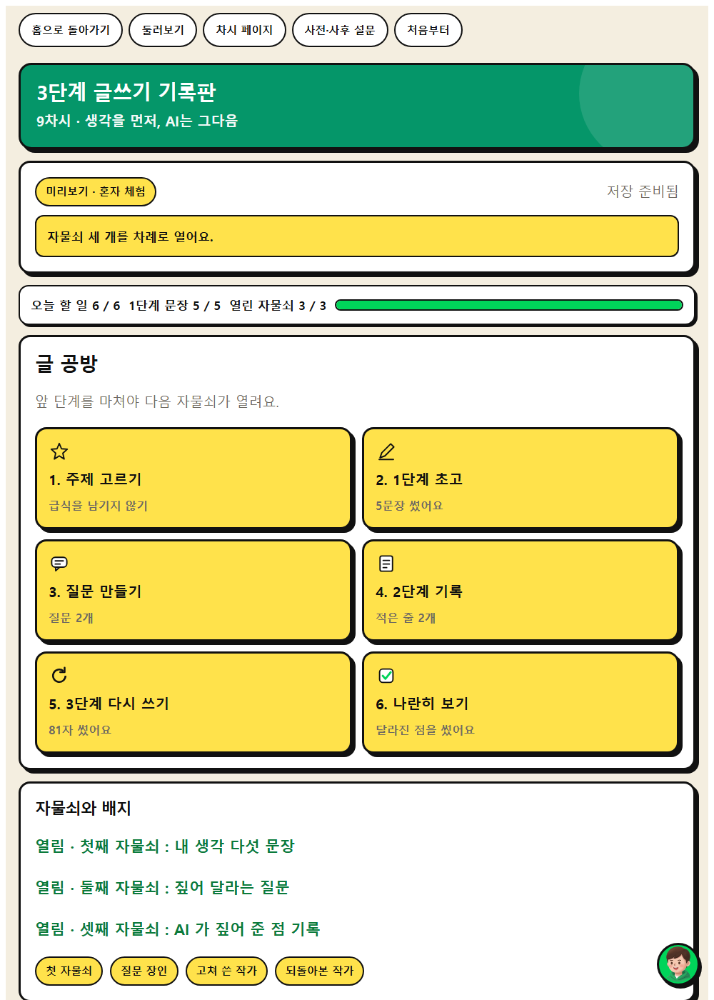
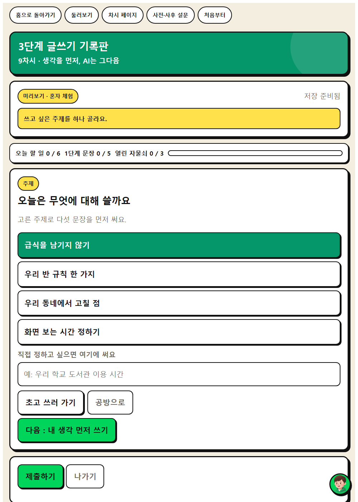
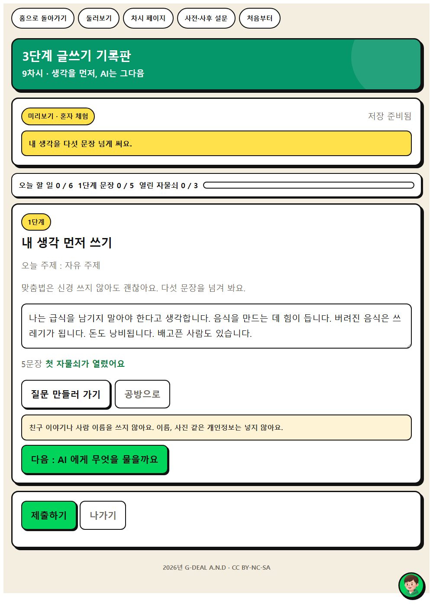
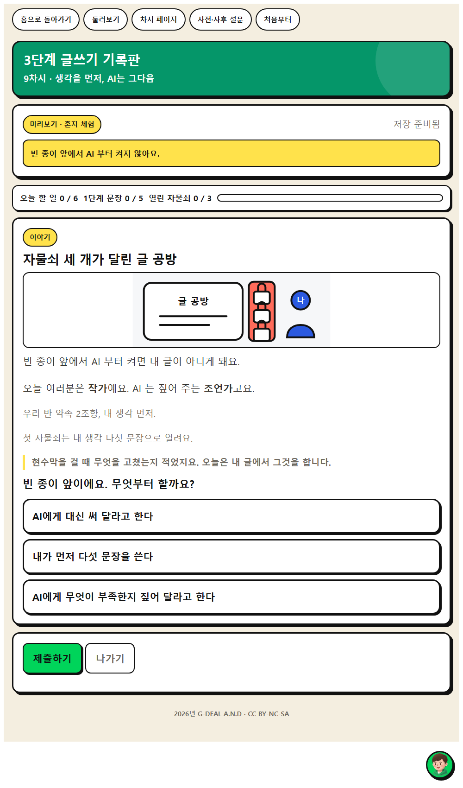
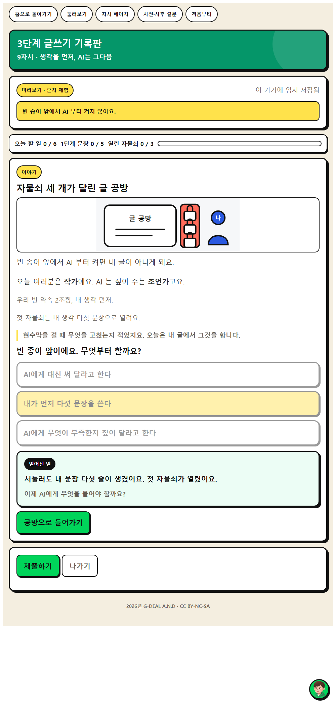

내 생각을 먼저 쓰고 AI의 도움을 받아 글을 다듬어 봅시다.



상황을 읽고 보기 셋 가운데 하나를 고릅니다. 고르면 바로 답이 나오지 않고 1.6초 기다립니다. 그 틈이 생각하는 자리입니다. 결과가 열린 뒤에도 0.9초가 지나야 넘어가는 단추가 생깁니다.
옳고 그름을 매기지 않습니다. 어느 보기를 골라도 막히지 않고, 고른 대로 다른 일이 벌어질 뿐입니다. 판단이 갈린 자리를 수업에서 다시 꺼내 주세요.
화면을 옮길 때도 0.7초 기다립니다. 고장이 아닙니다. 급한 학생은 기다리는 화면을 한 번 더 누르면 바로 넘어갑니다.


| 시각 | 단계 | 시간 | 무엇을 하나 |
|---|---|---|---|
| 0분 ~ 5분 | 도입 | 5분 | 동기 유발 |
| 5분 ~ 15분 | 전개 1 | 10분 | [활동 1] 1단계 내 생각 먼저 쓰기 |
| 15분 ~ 25분 | 전개 2 | 10분 | [활동 2] 2단계 AI에게 검토받기 |
| 25분 ~ 35분 | 전개 3 | 10분 | [활동 3] 3단계 내 말로 다시 쓰기 |
| 35분 ~ 40분 | 정리 | 5분 | 배움 정리 |
| 중점 역량 | 지식·이해 | 과정·기능 | 가치·태도 |
|---|---|---|---|
| 문제해결 사고 | AI에게 원하는 결과를 얻으려면 질문을 잘 만들어야 한다. | 목적에 맞게 질문을 구성하고 더 나은 결과를 얻도록 다듬기 | AI를 문제 해결의 도구로 적극 활용하려는 자세 |
| 성찰적 사고 | 되돌아봐야 앞으로 나아갈 수 있다. | 자기 판단과 AI 판단의 결과를 비교하고 무엇이 달라졌는지 점검하기 | AI 활용 과정을 되돌아보는 것에 가치를 두는 자세 |
보조 역량 : 창의적 사고
| 단계 | 학습 내용 | 교사 발문과 예상 답변 |
|---|---|---|
| 도입 5분 | 동기 유발 | 교사빈 종이 앞에서 바로 AI에게 물어본 적이 있나요? 그때 결과는 어땠나요? 학생그럴듯한데 제 이야기 같지가 않았습니다. 교사순서를 바꾸면 어떻게 될까요? 학생제 생각을 먼저 쓰면 달라질 것 같습니다. |
| 학습 문제 확인 | 교사내 생각을 먼저 쓰고 AI의 도움을 받아 글을 다듬어 봅시다. | |
| 준비물과 유의점 | 준비물3단 글쓰기 활동지 있으면 좋은 것3단 글쓰기 안내 PPT 유의할 점우리 반 약속 2조항(내 생각 먼저)을 함께 확인 | |
| 전개 30분 | [활동 1] 1단계 내 생각 먼저 쓰기 | 웹앱 주제 고르기 교사주제에 대해 하고 싶은 말을 5문장으로 먼저 써 봅시다. 학생생각보다 쓸 말이 많았습니다. |
| [활동 2] 2단계 AI에게 검토받기 | 웹앱 1단계 초고 교사내 글을 고쳐 달라고 하지 말고, 무엇이 부족한지 물어봅시다. 학생근거가 없다고 알려 주었습니다. 교사AI의 말 중에서 받아들일 것과 아닌 것을 나눠 봅시다. 학생어려운 낱말로 바꾸라는 말은 받아들이지 않았습니다. | |
| [활동 3] 3단계 내 말로 다시 쓰기 | 웹앱 질문 만들기 교사세 글을 나란히 놓고 무엇이 달라졌는지 설명해 봅시다. 학생생각은 그대로인데 근거가 생겨서 더 분명해졌습니다. | |
| 준비물과 유의점 | 준비물웹앱 3단계 글쓰기 기록판 있으면 좋은 것생성형 AI(교사 계정 또는 모둠 공용) 유의할 점2단계에서 ‘대신 써 줘’ 요청이 나오면 즉시 되짚기 유의할 점기기가 없는 모둠은 교사 시연 결과를 함께 검토 | |
| 정리 5분 | 배움 정리 | 교사이 글은 누구의 글인가요? 학생제 글입니다. 왜 이렇게 썼는지 설명할 수 있습니다. |
| 다음 차시 예고 | 교사다음 시간에는 나의 AI 사용 습관을 돌아봅시다. | |
| 준비물과 유의점 | 준비물3단 비교 글쓰기 유의할 점설명할 수 있으면 내 글이라는 기준 강조 |
3단계 글쓰기 기록판 · 초고를 먼저 다섯 문장 이상 쓴 뒤에야 다음이 열립니다. AI에게 던지는 말을 대신 써 줘가 아니라 무엇이 부족한지 짚어 줘로 바꾸고, 짚어 준 점을 보고 내 말로 다시 씁니다.
| 순서 | 화면 | 시간 | 학생이 하는 일 |
|---|---|---|---|
| 1 | 이야기 | 2분 | 글이 막힌 친구를 도우러 글 공방에 들어갑니다. 읽고 나서 "빈 종이 앞이에요. 무엇부터 할까요?" 보기 세 개 가운데 하나를 고릅니다. 고르면 바로 답이 나오지 않고 잠깐 뜸을 들인 뒤 벌어진 일이 열립니다. 옳고 그름을 매기지 않습니다. 교사빈 종이 앞이에요. 무엇부터 할까요? |
| 2 | 글 공방 | 세 단계가 자물쇠로 잠겨 있습니다. 앞 단계를 끝내야 다음이 열립니다. | |
| 3 | 주제 고르기 | 3분 | 오늘 쓸 주제를 고릅니다. |
| 4 | 1단계 초고 | 12분 | 내 생각을 먼저 다섯 문장 이상 씁니다. 여기를 넘겨야 다음이 열립니다. |
| 5 | 질문 만들기 | 6분 | AI에게 던질 말을 만듭니다. 대신 써 줘가 아니라 무엇이 부족한지 짚어 줘로 바꾸는 자리입니다. |
| 6 | 2단계 기록 | 8분 | AI가 짚어 준 점을 기록합니다. 앱은 AI를 부르지 않습니다. 진짜 AI는 교사 계정이나 모둠 공용 기기에서 씁니다. |
| 7 | 3단계 다시 쓰기 | 8분 | 짚어 준 점을 보고 내 말로 다시 씁니다. 초고와 나란히 놓고 무엇이 달라졌는지 봅니다. |
활동지에도 같은 예시가 실려 있습니다. 무엇을 쓰는지 먼저 보여 준 뒤 학생이 자기 말로 바꾸게 합니다.
| 활동지 칸 | 학생 작성 예시 |
|---|---|
| 1. 1단계 내 생각 (5문장) | 생각보다 쓸 말이 많았습니다. |
| 2. 2단계 AI가 짚어 준 점 | 근거가 없다고 알려 주었습니다. |
| 3. 받아들일 것 / 받아들이지 않을 것 | 어려운 낱말로 바꾸라는 말은 받아들이지 않았습니다. |
| 4. 3단계 내 말로 다시 쓰기 | 생각은 그대로인데 근거가 생겨서 더 분명해졌습니다. |
| 이런 일이 생기면 | 이렇게 합니다 |
|---|---|
| 초고 다섯 문장에서 막힌다 | 주제를 좁혀 줍니다. 문장 수가 차야 다음이 열립니다. |
| AI에게 대신 써 달라고 한다 | 질문 만들기 화면으로 되돌립니다. 묻는 말을 바꾸는 것이 오늘의 전부입니다. |
| 기기가 모자란다 | 모둠에 한 대만 두고 기록 담당을 정합니다. 판단은 모둠이 함께 하고 입력만 한 사람이 합니다. |
| 인터넷이 끊긴다 | 쓰던 내용은 그 기기에 남습니다. 활동지에 먼저 쓰게 하고 연결이 돌아오면 제출합니다. |
| 역량 | 잘함 | 보통 | 도움 필요 |
|---|---|---|---|
| 문제해결 사고 | 초고를 먼저 쓰고, AI에게 대신 써 달라가 아니라 짚어 달라고 묻는다. | 초고는 쓰지만 질문이 다시 대신 써 달라로 돌아간다. | 질문 보기를 골라 보며 묻는 말을 바꿔 본다. |
| 성찰적 사고 | 초고와 다시 쓴 글을 견주어 무엇이 달라졌는지 말한다. | 다시 쓰기는 하나 달라진 곳을 짚지 못한다. | 두 글을 나란히 놓고 달라진 곳을 함께 찾는다. |
| 성취기준 | [6실05-03] [6국06-02] |
|---|---|
| 학생 산출물 | 3단 비교 글쓰기, 변화 설명 문장 |
| 평가 방법 | 활동지 평가, 구술 평가 |
| 수업 도구 | 생성형 AI(교사 계정 또는 모둠 공용), 3단 글쓰기 활동지 |
인간중심 사고를 기르는 AI적정활용 수업 WISE · 2026년 G-DEAL A.N.D · CC BY-NC-SA